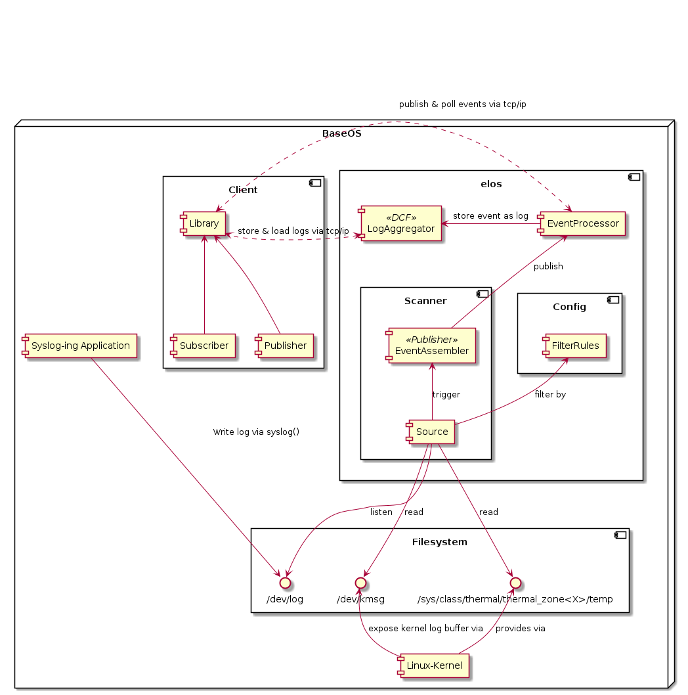
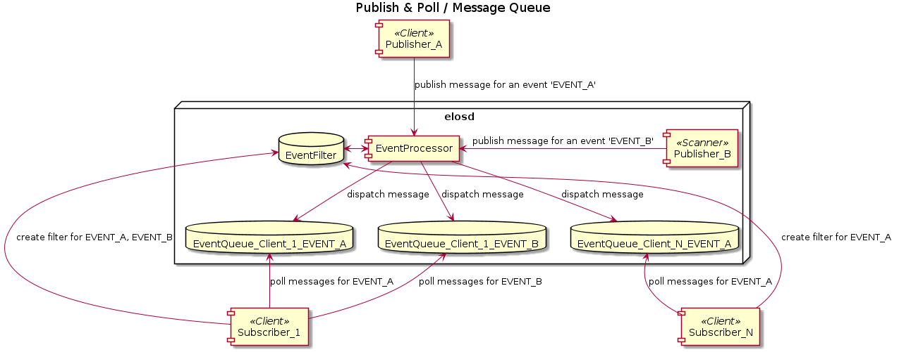

elos¶
Intro¶
The event logging and management system (elos) is intended to implement and provide a unified system monitoring interface standard. The main task is to collect various information about the system and convert them into a canonical format and therefore annotate the information with a specific set of meta data if possible. The thus obtained and refined system information are then :
persistently stored in a canonical format
published in a canonical format
The spectrum of system information is wide and ranges from syslog and kmsg to core dumps to measurements obtained from proc- and sys-fs like for example temperatures. Those system information are meant to obtained via so called Scanner which are basically Plugins as shared objects and by any other application capable to use the provided socket.
Requirements¶
For now the requirements are simplified into the following points:
Scan for different events and store them for later retrieval
Deliver list of selected events to one or more applications on request
Ability to push events to elos from an application
Ability to change events, access rights and other parameters via configuration files
Ability to easily extend elos with new events later in development
Ability to easily run in different environments
Ability to communicate with elos from different languages (e.g. Python)
Separate event scanner dependencies from elos itself to prevent dependency hell
Thread safe library functions
Support multiple user, multi processes
Be performant and efficient
…
The input and output data formats¶
The input data processed by elos can divided into two types:
Non canonical or non normalized Input (Raw Input)
Canonical or normalized Input (Canonical Input)
The following diagram shows the flow of canonical and non canonical
inputs. 
The canonical event entity can then be published and persistently logged which means stored on a non volatile storage for later evaluation.
The event logging and management system daemon has two types of interfaces to obtain input:
Scanner-API
Client-API
The Client-API uses a communication protocol where events are encode in JSON and therefore the canonical format is already enforced.
The Scanner-API also enforce the canonical format of an event from a scanner implementation for an arbitrary source. The scanner implementation itself must contain the functionality to convert input data from an arbitrary source into the canonical format of an event.
canonical event format¶
The canonical form for events has the following attributes:
date : unix timestamp in nano seconds resolution
source : a string that identifies the origin of this particular information
severity : when the message gets classified it is mapped to a severity value defined by this project.
hardware/hypervisor id : an unique identifier for the hardware, produced this particular information.
message code : used to hide information (from security perspective), thus an information has a meaning without providing a payload (text)
classification : a set of flags to categorize events.
payload: the actual payload of the information (text, number, structs))
The representation of an event look like:
As internal C-Struct :
struct elosEvent {
struct timespec date;
struct elosEventSource_t *source;
enum elosSeverityE_t severity;
char* hardwareid;
u64 classification;
enum elosEventMessageCodeE_t messageCode;
char* payload;
}
As message payload JSON encoded:
{
"date": [42,0],
"source": {
"appname": "openssh",
"filename": "/usr/bin/sshd",
"pid": 208
},
"severity": 1,
"hardwareid": "817d6b97-75f8-4faf-ba3c-583ae1123558",
"classification": 6,
"messageCode": 8000,
"payload": "..."
}
The JSON representation can omit empty fields.
date¶
timezone “UTC” is assumed
time since epoch in UTC is assumed
resolution nanoseconds
Format:
In
Cis represented bytimespec_t.The JSON representation of a date field:
[int,int] : seconds.nanoseconds
source¶
defines the origin of an information, the producer the information
provide at least one of the following:
free form program name
PID
file name
=> a canonical form for a source description is needed
Design decision – source description¶
It is necessary to define a canonical form for the source meta data point to reflect the different nature of information sources (i.e. files, applications).
A) free form string¶
simple and no further steps necessary
logic to read a source descriptor and extract the meaning (parse the string) is necessary every where it is used
B) define canonical form¶
The source information is translated into a format easy to process
Reading , using a source descriptor is unified
The Source descriptor can be defined as follows:
struct elosEventSource_t {
const char* appName;
const char* fileName;
const pid_t pid;
}
A source must have at least one attribute defined
A source can have more or all attribute defined
This structure can easily serialized in any binary or textual format. For example in JSON :
{
"appName": "openssh",
"fileName": "/usr/bin/sshd",
"pid": 208
}
Conclusion¶
We use B as it is easy machine process able and we can avoid parsing the information multiple times on different locations.
severity¶
The classification of the severity is done by the corresponding scanner. To have a common understanding of severity levels these are defined by elos as follows:
ELOS_SEVERITY_OFF = 0x00 No logging.
ELOS_SEVERITY_FATAL = 0x01 Fatal error, not recoverable.
ELOS_SEVERITY_ERROR = 0x02 Error with impact to correct functionality.
ELOS_SEVERITY_WARN = 0x03 Warning if correct behavior cannot be ensured.
ELOS_SEVERITY_INFO = 0x04 Informational, providing high level understanding.
ELOS_SEVERITY_DEBUG = 0x05 Detailed information for programmers.
ELOS_SEVERITY_VERBOSE = 0x06 Extra-verbose debug messages (highest grade of information)
Format:
typedef enum elosSeverityE {
ELOS_SEVERITY_OFF = 0,
ELOS_SEVERITY_FATAL,
ELOS_SEVERITY_ERROR,
ELOS_SEVERITY_WARN,
ELOS_SEVERITY_INFO,
ELOS_SEVERITY_DEBUG,
ELOS_SEVERITY_VERBOSE,
} elosSeverityE_t
{
"severity" : 6,
}
The actual mapping or the classification if none provided, for information coming from an input source to the common severity levels have to be done by the scanner.
hardware- / hypervisor-ID¶
The hardware- or hypervisor-ID is an identifier to assign an event to a specific machine. We could use different IDs of the system to create this ID either by directly using them, queuing them, or using some kind of hash-value, like generating a SHA-256.
Suggestion 01: Using IDS from DMI
cat /sys/class/dmi/id/board_serial
cat /sys/class/dmi/id/product_uuid
Suggestion 02: Using the HostID
#include <unistd.h>
long gethostid(void);
From Linux Programmer’s Manual (man gethostid):
gethostid() respectively get a unique 32-bit identifier for the current machine.
The 32-bit identifier is intended to be unique among all UNIX systems in existence.
[...]
In the glibc implementation, the hostid is stored in the file /etc/hostid.
(In glibc versions before 2.2, the file /var/adm/hostid was used.)
In the glibc implementation, if gethostid() cannot open the file containing the host
ID, then it obtains the hostname using gethostname(2), passes that hostname to
gethostbyname_r(3) in order to obtain the host's IPv4 address, and returns a value
obtained by bit-twiddling the IPv4 address. (This value may not be unique.)
Suggestion 03: Using the ID of the local system, called “machine id”
cat /etc/machine-id
32 symbols from 0-9 and a-f
The result differs for the local machine and docker
Booting the docker twice on the same machine will have the same result
Explanation from https://www.man7.org/linux/man-pages/man5/machine-id.5.html:
The /etc/machine-id file contains the unique machine ID of the local system that is set during installation or boot. [...] The machine ID does not change based on local or network configuration or when hardware is replaced. [...] This ID uniquely identifies the host. It should be considered "confidential", and must not be exposed in untrusted environments, in particular on the network. If a stable unique identifier that is tied to the machine is needed for some application, the machine ID or any part of it must not be used directly. Instead the machine ID should be hashed with a cryptographic, keyed hash function, using a fixed, application-specific key. That way the ID will be properly unique, and derived in a constant way from the machine ID but there will be no way to retrieve the original machine ID from the application-specific one.
Decision
Elos will use the machine-id.
DMI from suggestion 1 isn’t available on our system.
gethostid() from suggestion 2 is only defined for a 32 bit identifier in POSIX.1-2001 and POSIX.1-2008, so the hostid seems a little bit outdated, like IPv4
we have already defined how the machine-id can be initialized (init-system, kernel param, …) as described in the initialization part of the manpage
passing in the machine-id by kernel argument could be a real serial number, obtained somewhere in the early boot stage
if this works to distinguish between host and docker system, it should also work for host and guest if it becomes necessary
classification¶
The classification attribute is used to categorize events to be related to a certain context of system information. The classification value is a 64 unsigned integer and is splitted into 3 sections.
bit 1 to 32 (0x00000000FFFFFFFF) reserved by elos (never change their meaning)
bit 33 to 41 (0x000000FF00000000) can be defined and used by the user (something like User_1-User_7)
bit 42 to 64 (0xFFFFFF0000000000) reserved for future use
The following table describes the lower 32 bit classification bit mask and their meaning:
Value |
Name |
Description |
|---|---|---|
0x0000000000000000 |
undefined |
used to indicate not available classification information |
0x0000000000000001 |
Kernel |
all events which are related to some kernel functionality |
0x0000000000000002 |
Network |
all network related information |
0x0000000000000004 |
Security |
all events that are security related |
0x0000000000000008 |
Power |
all events that is relevant for power management |
0x0000000000000010 |
Storage |
all events which are related to filesystem and non volatile storage |
0x0000000000000020 |
Process |
all events about the livecycle of a process |
0x0000000000000040 |
IPC |
all events about IPC |
0x0000000000000080 |
Hardware |
all events about hardware |
0x0000000000000100 |
elos |
all events about elos internals |
0x0000000000000200 |
Process Errors |
all events about faulty or misbehaving processes |
An event can have multiple classification flags, for example a chassis
intrusion detection event can be classified as Security|Hardware.
Format:¶
Design Decision – format of classification
As string list combined with enumerations
A
NULLterminated list of strings with enum values as index.
enum elosClassificationE {
Network =0,
Security,
Audit,
};
static const char* elosClassificationNames[] = { "Network", "Security", "Audit", NULL};
struct elosEvent_t {
elosClassificationE* classification = {Network, Security, NULL};
}
...printf("%s\n", elosClassificationNames[event.classification[0]]);...
{
"classification" : ["Network","Security","Audit"],
}
As flags encoded in uint64
#define NETWORK 1>>0x1ULL
#define NETWORK 2>>0x1ULL
#define NETWORK 3>>0x1ULL
uint64_t classification = NETWORK | SECURITY | AUDIT;
{
"classification" : 7
}
Decision
Elos uses the approach B) and encode the classification in a 64
unsigned integer.
messageCode – Meaning and format¶
The message code is used to annotate an event with a specific meaning to enable a client to understand the event without parsing the original input or the payload of the event.
The following table describes the so far defined message code groups
Range |
Category |
Description |
Advised Action |
|---|---|---|---|
0000-0999 |
elos events |
Specific elos events |
can be used as check point or safely ignored |
1000-1999 |
informational |
general information of the event source |
can safely ignored no action required |
2000-2999 |
Program / Service Status |
Successful resource acquisition by process, process progress information |
can be used to check and verify the state of a process |
3000-3999 |
Program / Service Resource Error |
reports bad input or environment problems |
A process is probably not working correctly, due to m isconfiguration or unexpected resource behavior |
4000-4999 |
Program / Service IPC Error |
The process failed to process an external IPC request |
if waiting for an IPC response from the event source proceed according to the detailed message code |
5000-5999 |
Program / Service Execution Error |
process terminated by system (mapping to Exit_Codes?) |
The event source is killed by the system or will be killed anytime soon, take necessary action immediately and terminate or free all shared resources, do not expect any response from this process |
6000-6999 |
Hardware fault |
Unrecoverable hardware fault |
the source detected a hardware fault, prepare immediately to get killed without further signals or warning |
7000-7999 |
Hardware status |
Hardware state on/of f/plugged/unplu ged/initialized |
the source detected a hardware status change, take action if responsible or interested |
8000-8999 |
Security Audit |
Security related events like login attempts or permission changes of resources |
If in charge to maintain security, take appropriate action |
0 - 999 elos events
message code |
Description |
|---|---|
200 |
New subscription |
202 |
Removed subscription |
400 |
Failed to create subscription |
401 |
Failed to remove subscription |
501 |
Event Blacklist Failed |
1000 - 1999 Informational
message code |
Description |
|---|---|
1000 |
wildcard - subscribe to any 1xxx |
1101 |
debug log message |
1102 |
information log message |
1103 |
trace log message |
1111 |
kernel log buffer message |
2000 - 2999 Program Status
message code |
Description |
|---|---|
2000 |
wildcard - subscribe to any 2xxx |
2001 |
Process created |
2002 |
Process exited (exit 0) |
2003 |
opened file |
2004 |
closed file |
2005 |
acquired a lock |
2006 |
release a lock |
2007 |
socket opened |
2008 |
socket closed |
3000 - 3999 Program Resource error
message code |
Description |
|---|---|
3000 |
wildcard - subscribe to any 3xxx |
3001 |
Not authorized - authorization for some action failed |
3003 |
forbidden – action valid but insufficient access rights |
3004 |
file not found - a path doesn’t exist |
3005 |
read error - reading from a resource failed |
3006 |
write error - writing to a resource failed |
3023 |
resource is locked |
3422 |
message not understood/not parsable |
4000 - 4999 Program IPC error
message code |
Description |
|---|---|
4000 |
wildcard - subscribe to any 4xxx |
4001 |
Not authorized - authorization for some action failed |
4002 |
Malformed IPC request |
4005 |
method/action not allowed |
4006 |
can not serve request due to resource error |
5000 - 5999 Program Execution error
message code |
Description |
|---|---|
5000 |
wildcard - subscribe to any 5xxx |
5001 |
SIGSYS - illegal syscall |
5002 |
SIGSEGV/BUS - illegal memory access |
5003 |
SIGILL - illegal instruction |
5004 |
SIGFPE - floating point exception |
5005 |
Core Dumped |
5006 |
Process Error Code - exit code != 0 (EXIT_SUCCESS) |
6000 - 6999 Hardware Fault
message code |
Description |
|---|---|
6000 |
wildcard - subscribe to any 6xxx |
6001 |
device read error |
6002 |
device write error |
6003 |
device critical temperature |
6004 |
device critical power supply |
6005 |
device setup error |
7000 - 7999 Hardware Status Change
message code |
Description |
|---|---|
7000 |
wildcard - subscribe to any 7xxx |
7001 |
(peripheral) device power on |
7002 |
(peripheral) device power off |
7003 |
device plugged |
7004 |
device unplugged |
7005 |
device ready |
7125 |
Heavy Impact – a heavy impact was detected |
7126 |
Over temperature – system temperature exceeds operation limit |
7127 |
Over temperature – system temperature is within operating parameters |
8000 - 8999 Security Audit
message code |
Description |
|---|---|
8000 |
wildcard - subscribe to any 8xxx |
8001 |
new user added |
8002 |
user removed |
8003 |
password/key changed |
8004 |
login fail |
8005 |
login ok |
8006 |
resource permission changed (file permissions, capabilities) |
8007 |
unauthorized publishing |
The message code shall be maintained in a separate public header file
event_message_code.h. To be as most possibly type safe the codes shall
be encode as typedef enum elosEventMessageCodeE_t.
payload – original information¶
Design Decision – content of payload¶
the original non canonical data
The payload contains the original information as it is encoded as base64 string.
The extracted payload of an arbitrary non canonical input format
The payload should only the actual data, all meta information already covered by the other attributes are stripped from the payload.
convert payload into variant type
The payload is tried to converted into a variant type, which covers:
Number
String
Raw: bytes + length
no convention up to the implementation
Free form payload
bytes + lengthThe content is defined by the source or corresponding scanner
The subscriber or reader of the event must know how to read the actual payload
Examples for converting non canonical into canonical input¶
Syslog entry¶
Non canonical input
<38>Jan 1 01:41:57 sshd[240]: Server listening on :: port 22.
canonical output
date = [1641001317,0]
severity = 6
source = {"appName":"sshd","pid":240}
hardware id = "4bfa155647104435a92b2a27486fd72c"
classification = 4
messageCode = 2007
payload = "Server listening on :: port 22."
Temperature form sysfs¶
Non canonical input
taken from
cat /sys/class/thermal/thermal_zone<X>/temp
50000
canonical output
date = time()
severity = Info
source = {appname:"Kernel","filename":"/sys/class/thermal/thermal_zone<X>/temp"}
hardware id = "4bfa155647104435a92b2a27486fd72c"
classification = 0
messageCode = 6003
payload = "50000"
Coredump¶
Non canonical input
taken from
coredumpctl info
PID: 2966062 (conftest)
UID: 1000 (wgehrha)
GID: 985 (users)
Signal: 6 (ABRT)
Timestamp: Mon 2022-03-14 14:46:21 CET (2h 57min ago)
Command Line: ./conftest
Executable: /base/build/tmp/work/x86_64-linux/coreutils-native/8.32-r0/build/conftest
Control Group: /system.slice/docker-d926ec28b44a1acdef4028e7ac31a57fa59233ea7f252ee942fdad4fdeda2a0c.scope
Unit: docker-d926ec28b44a1acdef4028e7ac31a57fa59233ea7f252ee942fdad4fdeda2a0c.scope
Slice: system.slice
Boot ID: b0f8d2d6f4c04a4780d37d61c5f040c8
Machine ID: 4bfa155647104435a92b2a27486fd72c
Hostname: d926ec28b44a
Storage: /var/lib/systemd/coredump/core.conftest.1000.b0f8d2d6f4c04a4780d37d61c5f040c8.2966062.1647265581000000.zst (present)
Disk Size: 17.8K
Message: Process 2966062 (conftest) of user 1000 dumped core.
Module /base/build/tmp/work/x86_64-linux/coreutils-native/8.32-r0/build/conftest with build-id 3b2c55acb3f48df451fcb1>
Module /base/build/tmp/sysroots-uninative/x86_64-linux/lib/libc.so.6 with build-id b89eed4abc28929e3cb8a5dd6f0a6cd77d>
Module /base/build/tmp/sysroots-uninative/x86_64-linux/lib/ld-linux-x86-64.so.2 with build-id 7341e3cb7f7334630abae45>
Module linux-vdso.so.1 with build-id f9fada32e91353254b262e357cb155d189cc0523
Stack trace of thread 1766830:
#0 0x00007fbd8bc7c723 n/a (/base/build/tmp/sysroots-uninative/x86_64-linux/lib/libc.so.6 + 0x8c723)
ELF object binary architecture: AMD x86-64
canonical output
date = [1647265581,000000000]
severity = (SIGABRT ->) Warning
source = {pid: 2966062,appname:"./conftest","filename":"/base/build/tmp/work/x86_64-linux/coreutils-native/8.32-r0/build/conftest"}
hardware id = "4bfa155647104435a92b2a27486fd72c"
classification = 1
messageCode = n/a
payload = "
Message: Process 2966062 (conftest) of user 1000 dumped core.
Module /base/build/tmp/work/x86_64-linux/coreutils-native/8.32-r0/build/conftest with build-id 3b2c55acb3f48df451fcb1>
Module /base/build/tmp/sysroots-uninative/x86_64-linux/lib/libc.so.6 with build-id b89eed4abc28929e3cb8a5dd6f0a6cd77d>
Module /base/build/tmp/sysroots-uninative/x86_64-linux/lib/ld-linux-x86-64.so.2 with build-id 7341e3cb7f7334630abae45>
Module linux-vdso.so.1 with build-id f9fada32e91353254b262e357cb155d189cc0523
Stack trace of thread 1766830:
#0 0x00007fbd8bc7c723 n/a (/base/build/tmp/sysroots-uninative/x86_64-linux/lib/libc.so.6 + 0x8c723)
ELF object binary architecture: AMD x86-64
"
Components¶
Based on the requirements we can simplify Elos into the following abstract components:
EventProcessor: Elos itself as the message broker which receives and distributes events based on previously defined event filters.
LogAggregator: Persist events that fits (SM_REQ001) and is therefore the implementation for the required DataCollectionFacility (DCF)
Scanner: Modular part (shared object) of the program that scans for events and publish them
Library: C library that contains everything to communicate with the server
Components using elos:
Client: Applications which subscribe to or publish events by using the C-Library (or directly to the socket)
Kernel: delivers log messages via its interface to the event logging and management system daemon
Syslog-ing application: Application that uses syslog() to write log infos (most FOSS does this)
Design decision - Basic principle of processing inputs¶
Filtering of input data is done by the scanner in any case
A) Logging of events is done seperately by each event source¶
Input
Is a arbitrary data point (String, number , …)
processing:
If matched by filter rule then:
If event should be published pass it to the EventAssembler which creates and publish an event containing the input data
If event should be logged pass it to the LogAssebler which creates and stores the
event
Commitment:
Not each event is automatically logged
The EventProcessor receives, filters and dispatches (or drops) published events
Each Scanner contains the logic on how to filter and convert raw inputs into an canonical event
Access to LogAggregator must be synchronized for multiple scanner threads
Knowledge and Logic for new Log sources can be extended separately through shared library!

B) Logging is done by the EventProcessor¶
input
Is a arbitrary data point (String, number , …)
Each input
Datais an event if passes the filter criteria
processing:
Each event is published
Each published event gets logged by the LogAggregator in the EventProcessor
Commitment:
Data is published as it is as event payload
Each event is logged through LogAggregator
Logging is done by EventProcessor
Scanner has no knowledge about Data format
Knowledge and Logic is possibly scattered through EventProcessor and LogAggregator

Conclusion¶
We use A as :
Separate Log-Features from event handling (separation of concerns)
Better performance in the EventProcessor because we do not bother with logging
Knowledge and logic for new Log sources can be extended separately through shared library!
elos¶
Elosd has the following tasks:
Receive and dispatch events based on user defined event filters (EventProcessor)
Persist certain event messages on a non volatile storage
Maintain the scanner plugins (Scanner Manager)
The EventProcessor¶
Elos is required to accept messages from scanner plugins or different applications generated through arbitrary events and dispatch them to corresponding event lists (message queues).
communication patterns¶
Requirements:
N to M communication (N message producer to M message consumer)
Message producer do not need to know anything about message consumers
Possible approaches using a message broker architecture
Central instance controlling publishing of message
House keeping, resource control at a central known controllable point
Publish & Poll
The message dispatching follows the “publish & poll” or the “message queue / mailbox” communication pattern (https://en.wikipedia.org/wiki/Message_queue)
Messages will be fetched by the client
Publish & subscribe
Others like the “publish & subscribe” communication pattern (https://en.wikipedia.org/wiki/Publish%E2%80%93subscribe_pattern) are in discussion if required.
Message is directly pushed to the client, the client gets directly notified about new messages
Actual implementation¶

In general there are the following roles:
EventProcessor:
Receives published events
Compares the received items with the previously configured EventFilters
Append the event to the EventFilter’s EventQueue in case of a match
Drop the event in case there were no matches
Only one instance present (running multiple instances is not intended)
Subscriber:
Is a client
Registers for specific events based on EventFilterStrings
The number of subscribers is limited by design only by system resources
Subscribers connect via TCP/IP socket
Has to maintain an active connection represented by a session to :
Poll for events on a regular basis
Keep created EventFilters and EventQueues alive
Number of EventQueues a subscriber can create is limited by the type of the EventQueueID
Currently EventFilterStrings are not shared or compared, so registering two times to receive events with (e.g.) messsage code 8004 will result in two fully independent EvenQueues.
Publisher<client,scanner>:
Send events to the EventProcessor for distribution
Can publish an arbitrary amount of independent events per session/connection
Multiple publishers can publish the same event
Client:
Can be any arbitrary process who is capable to connect to the elosd socket. (this includes remote process on other machines)
Can be both Subscriber and Publisher
Number is limited at least by CLIENT_MANAGER_MAX_CONNECTIONS + CLIENT_MANAGER_LISTEN_QUEUE_LENGTH
Scanner:
Are dynamic loadable shared objects to extend the basic functionality of elosd by publishing arbitrary information directly via the EventProcessor
Not explicitly limited in number, but by system resources like open file descriptors or thread count
The relevant entities are related as follows:

Event
Is the entity which is published
Corresponds usually to one publisher, but it is not excluded that multiple publishers publish the same events (i.e. two publishers observing the syslog will publish the same log line)
Event lifetime depends on existing EventFilters and EventQueues, if the Event itself doesn’t match any existing EventFilters while published, it is dropped, otherwise it will reside in an EventQueue until it is read or overwritten by newer Events.
EventFilter
Receives a unique EventFilterID during creation
Exists only as long as the corresponding client has an active connection
Matches Events based on the given EventFilterString (e.g. events with messageCode 8004)
EventQueue (message queue/box)
Receives a unique EventQueueID during creation
Exists only as long as the corresponding client has an active connection
Is limited in capacity, which can be controlled through the API
Drops oldest messages first on overflow
EventFilterNode
Receives a unique EventFilterNodeID during creation
Exists only as long as the corresponding client has an active connection
Connects one or more EventFilters with one EventQueue
Allows for much easier Event processing (“if any EventFilter in EventFilterNode matches, add Event to EventQueue”)
Publishing

Subscribing

Design Decision – communication protocol¶
Requirements:
Easy to extend and human readable
Message producer do not need to know anything about message consumers
“scale able” and therefore it works for a view as good for many participants, which means the number of participants can change constantly during runtime
Possible approaches :
Binary protocol
More size efficient then text based
Difficult to use i.e. on command line for shell scripting without dedicated utilities
Not human readable
BSON could be a possible solution
Extendable
More efficient then text based, due to no text parsing overhead
text based protocol
Easy to use i.e. on command line
Human readable
Somewhat laborious to use in low level languages like C
jsonReadable but compact in size
Well known / supported
Structured and type support
Not as cycle efficient as binary protocols due to parsing overhead
Decision:
Use a JSON based protocol as:
Is easy to extend , important for future feature requests
Easy to use on command line, many tools/libraries available and proven in use
Basic type support: possible to encode integer, floating points strings, objects/maps and arrays
Actual implementation¶
{
"date":[1362,682302528],
"source": {"appName":"","fileName":"","pid":0},
"hardwareid":"INVALID",
"payload":"arbitrary data",
"classification": 0,
"severity": 0,
}
Event Logging¶
The event logging system implements a data collection facility, which collects events from different sources to filters and limits them in order to store them. For details about the canonical event format see “canonical event format”.
The Event Logging system has the following main goals:
filter events depending on filter settings
limit events to log if a configured limit (logs per time) is exceeded
optimize storage access to minimize IO operations and maximize physical storage lifetime
For the design the following assumptions are made: (TBD make some reliable measurements)
the upper limit of available storage is 100GB
an storage entity the event is round about <= 100Kb
10⁶ events; 100 event/s => 60H
All events are treated equal / categorize events and apply different storage retention policies
What is the minimal expected time frame to hold events (1a ?)
512 Bytes is smallest storage entity size (SSD/MMC always write at least 512 byte)

Log aggregation¶
The details on storing events shall be encapsulated by a component called LogAggregator. This component is responsible for the following tasks:
manage storage backend start, stop
filter and limit event logs
forward events to the actual storage backend to persist them
manage concurrent storage requests
manage retention policy, (trigger log cleanup, drop old logs )
monitor storage backend health, generate notification about failing storage backend
manage multiple backends (compile time or as loadable plugin?)
The Loggagregator is a shared instance in the elosd. So it has to synchronize all attempts to persist an event.
LogAggregator - Detailed Design (API)¶
The LogAggregator interface is defined as follows:
typedef struct elosLogAggregator {
elosStorageBackend_t *backend;
} elosLogAggregator_t;
safuResultE_t elosLogAggregatorStart(elosLogAggregator_t *logAggregator);
safuResultE_t elosLogAggregatorAdd(elosLogAggregator_t *logAggregator, const elosEvent_t *event);
safuResultE_t elosLogAggregatorShutdown(elosLogAggregator_t *logAggregator);
safuResultE_t elosLogAggregatorFindEvents(elosLogAggregator_t *logAggregator, const char *rule, safuVec_t *events);
elosLogAggregatorStart
Initialize the event logging system. It initializes the configured storage backend and setup synchronization and filter functionality.
Function:
safuResultE_t elosLogAggregatorStart(
elosLogAggregator_t *logAggregator
);
Parameters:
[in]logAggregator -> a pointer to a logAggregator instance
Returns:
SAFU_RESULT_OK -> on success
SAFU_RESULT_FAILED -> on failure
elosLogAggregatorShutdown
Shutdown the logging system and free all related resources.
Function:
safuResultE_t elosLogAggregatorShutdown(
elosLogAggregator_t *logAggregator
);
Parameters:
[in]logAggregator -> a pointer to a logAggregator instance
Returns:
SAFU_RESULT_OK -> on success
SAFU_RESULT_FAILED -> on failure
elosLogAggregatorAdd
Queue an event to store on non volatile storage.
Function:
safuResultE_t elosLogAggregatorAdd(
elosLogAggregator_t *logAggregator,
const elosEvent_t * event
);
Parameters:
[in]logAggregator -> a pointer to a logAggregator instance[in]event -> the event that will get stored
Returns:
SAFU_RESULT_OK -> on success
SAFU_RESULT_FAILED -> on failure
elosLogAggregatorFindEvents
Function:
safuResultE_t elosLogAggregatorFindEvents(
elosLogAggregator_t *logAggregator,
const char *rule,
safuVec_t *events
);
Parameters:
[in]logAggregator -> a pointer to a logAggregator instance[in]rule -> a filter rule in string format[in|out]events -> an event vector, where elements will be appended
Returns:
SAFU_RESULT_OK -> on success
SAFU_RESULT_FAILED -> on failure
Logging Backend(s)¶
The actual storage process depends on the storage engine used. Therefore this is abstracted in so called Storage backends. A storage backend takes one or more events store them in the underlying storage engine. A storage engine could be a simple file write, a database or any other solution that fits the needs for the target system.
The interface of a storage backend consist basically of the following tasks:
Backend open
Backend store
Backend close
Realize required retention policy
The following Design Decision shall describe the decision process for the final storage backend to use.
Design Decision – Storage backend¶
JSON-File based
DBMS - SQLITE
Time series DB
NoSQL
Custom implementation
Storage backend Interface - Detailed Design (API)¶
The StorageBackend interface is defined as follows:
struct elosStorageBackend;
typedef struct elosStorageBackend elosStorageBackend_t;
typedef safuResultE_t elosStorageBackendStart_t(elosStorageBackend_t *backend);
typedef safuResultE_t elosStorageBackendPersist_t(elosStorageBackend_t *backend, const elosEvent_t *event);
typedef safuResultE_t elosStorageBackendShutdown_t(elosStorageBackend_t *backend);
struct elosStorageBackend {
const char *name;
void *backendData;
elosStorageBackendStart_t *start;
elosStorageBackendPersist_t *persist;
elosStorageBackendShutdown_t *shutdown;
};
elosStorageBackendStart
Initialize the event logging system. It initializes the configured storage backend and setup synchronization and filter functionality.
Function:
typedef safuResultE_t elosStorageBackendStart_t(
elosStorageBackend_t *backend
);
Parameters:
[in]backend -> a pointer to the backend instance
Returns:
SAFU_RESULT_OK -> on success
SAFU_RESULT_FAILED -> on failure
elosStorageBackendShutdown
Shutdown the logging system and free all related resources.
Function:
typedef safuResultE_t elosStorageBackendShutdown_t(
elosStorageBackend_t *backend
);
Parameters:
[in]-> a pointer to a backend instance
Returns:
SAFU_RESULT_OK -> on success
SAFU_RESULT_FAILED -> on failure
elosStorageBackendPersist
Writes the event to the underlying storage.
Function:
typedef safuResultE_t elosStorageBackendPersist_t(
elosStorageBackend_t *backend,
const elosEvent_t *event
);
Parameters:
[in]backend -> a pointer to a backend instance[in]event -> a pointer to a event instance to persist
Returns:
SAFU_RESULT_OK -> on success
SAFU_RESULT_FAILED -> on failure
Json Backend - Detailed Design (API)¶
The JsonBackend interface is defined as follows:
safuResultE_t elosJsonBackendStart(elosStorageBackend_t *backend);
safuResultE_t elosJsonBackendPersist(elosStorageBackend_t *backend, const elosEvent_t *event);
safuResultE_t elosJsonBackendFindEvents(elosStorageBackend_t *backend, elosRpnFilter_t *filter, safuVec_t *events);
safuResultE_t elosJsonBackendShutdown(elosStorageBackend_t *backend);
typedef struct elosJsonBackend {
int storageFile;
} elosJsonBackend_t;
elosJsonBackendStart
Initialize the file backed storage of JSON serialized event objects. The
elosStorageBackend_t.backendData shall be initialized with a pointer
to a elosJsonBackend_t instance.
elosJsonBackend_t.storageFileWrite and
elosJsonBackend_t.storageFileRead shall contain valid file
descriptors to the target file for writing/reading purposes. In write
mode, the file shall be opened for appending and synchronous writing, to
ensure a write is carried out through the kernel caches.
Function:
safuResultE_t elosJsonBackendStart(
elosStorageBackend_t *backend
);
Parameters:
[in]backend -> a pointer to the backend instance
Returns:
SAFU_RESULT_OK -> on success
SAFU_RESULT_FAILED -> on failure
elosJsonBackendShutdown
Shutdown the logging system and free all related resources.
Function:
safuResultE_t elosJsonBackendShutdown(
elosStorageBackend_t *backend
);
Parameters:
[in]-> a pointer to a backend instance
Returns:
SAFU_RESULT_OK -> on success
SAFU_RESULT_FAILED -> on failure
elosJsonBackendPersist
Writes the event to the underlying storage pointed to by
elosStorageBackend_t.backendData. The function shall not call
sync to flush kernel caches, as the file shall be opened with
O_SYNC. The function shall block until the event is successful written
to the storage backend.
Function:
safuResultE_t elosJsonBackendPersist(
elosStorageBackend_t *backend,
const elosEvent_t *event
);
Parameters:
[in]backend -> a pointer to a backend instance[in]event -> a pointer to a event instance to persist
Returns:
SAFU_RESULT_OK -> on success
SAFU_RESULT_FAILED -> on failure
elosJsonBackendFindEvents
Applies a filter to a given storage backend. Events which weren’t sorted out by the filter, will be appended on the event vector.
Function:
safuResultE_t elosJsonBackendFindEvents(
elosStorageBackend_t *backend,
elosRpnFilter_t *filter,
safuVec_t *events
);
Parameters:
[in]backend -> a pointer to a backend instance[in]filter -> a filter that will be applied to the backend[in|out]events -> an event vector, where elements will be appended
Returns:
SAFU_RESULT_OK -> on success
SAFU_RESULT_FAILED -> on failure
Event Filtering and Mapping¶
Elos has to convert arbitrary input into the canonical event format and filter such events based on that format. The filter step is necessary to categorize events and select them for further processing steps, like dispatching them to the correct subscribers.
This leads to two kinds of event processing:
Filtering: decide whether or not an event matches at least one rule and continue processing or drop the event
Mapping: decide whether or not an input with it’s processed event data matches a rule and assign a corresponding value to a property of an event.
The following diagram gives an overview of possible usages of
event filtering and mapping. 
Mapping¶
The mapping is a specific task depending on the input and the meaning of those inputs and their origin. Therefore it is necessary to have a generic component which is capable of mapping values to the different canonical event properties according to one or more configurable rules. A hard coded rule set will be not flexible enough, as it is not possible to predict which programs are running on the final system and to manage a mapping for all i.e. log lines of each possible version of a program.
So for example to assign a message code to a new event depending on the
original input the MappingComponent needs the following inputs :
A mapping rule
The input
The event with values already mapped
A result, which should be applied if the rule matches
MappedVal = MappingRule(Input, Event, Val);
Filtering¶
Filtering of events can be achieved by a similar approach, the only
difference is that it is enough to know if a filter yields a true or
false. A FilterComponent requires the following inputs:
A filter rule
The event
Applies = FilterRule(Input, Event);
A rule should be a boolean expression and evaluates always to false
or true. To avoid continues parsing of rules a mechanism is needed
that allows to precompile rules and apply them on incoming events and or
inputs. A rule given as a string like
input == "open port" && event.source.appName == "ssh" must be parsed
and prepared to be applied efficiently to incoming events.
To accomplish this the following components are necessary:
A rule evaluation engine
A rule source which provide rules
A translation engine to prepare rules for the evaluation engine
Rule Sources¶
Rule sources in the elos context currently can be a configuration object or a subscription from a client. In the first case rules can be mapping or filtering rules. For the client subscription currently only filtering rules are useful. But if a use case for mapping rules comes up it shall be possible to use them there as well.
The rule strings shall be provided by the configuration as simple key value mappings:
4001: "event.severity == 2 && input == "some value" "
Translation engine¶
The translation unit shall parse the input rule and convert it into a valid input sequence for the RpnFilter of the evaluation unit.
Rule evaluation engine¶
A state machine based on the Reverse Polish Notation (RpnFilter) is currently used as the rule evaluation engine. The concept should be easily extensible by additional engines that provide other implementations. For example a script interpreter that provides the ability of stateful filtering can be plugged in here.
RpnFilter¶
Fast and efficient message filtering. See the RpnFilter Documentation for more details.
EventProcessor¶
Abstract component to group components related to Event processing together. See the EventProcessor Documentation for more details.
Scanner Manager¶
Elosd allows to observe the system for certain events and publish them directly via the EventProcessor. The actual observation and publishing is done within the Scanners. The Scanner Manager has the task to maintain them.
A Scanner:
Is a shared object that provides the Scanner-API by exporting the function symbols defined in scanner.h
Intended to publish messages for arbitrary events
Are not explicitly limited in number, but by system resources like open file descriptors
Is expected to achieve lower latency then publishing messages through tcp/ip
Scanner Manager:
Locate shared object files that shall be loaded as Scanner
Instantiate, configure and run a Scanner in a separated thread
Stop and restart scanner if necessary
Scanner¶
A Scanner:
Is a shared object that provides the Scanner-API by exporting the function symbols defined in scanner.h
Intended to publish messages for arbitrary events
Are not explicitly limited in number, but by system resources like open file descriptors
Is expected to achieve lower latency then publishing messages through tcp/ip
build’in scanner (examples)¶
Syslog
Kmsg
Syslog – Scanner¶
Serves as a syslog daemon and converts syslog lines into the canonical event format.

The format of syslog lines is defined in
The Syslog Protocol (most recent)
The BSD syslog Protocol (obsolet but used by libc)
The current implementation can parse syslog lines according to the
schema produced by the glibc syslog function. (see “%h %e %T
“)
The syslog socket is configured as an unix domain socket with UDP and
listen on /dev/log.
Configuration¶
Compile time:
ELOSD_SYSLOG_PATH–> the path where to create a unix UDP socket to listen on, default is/dev/log
Environment:
ELOS_SYSLOG_PATH–> the path where to create a unix UDP socket to listen on, default isELOSD_SYSLOG_PATH
Configuration structure
The mapping rules are provided through the configuration. The configuration (samconf) allows to lookup single options by a path like notation. So the syslog scanner expect the following config structure:
SyslogScanner
├── SyslogPath
├── MappingRules
│ ├── MessageCode
│ │ ├── 4000
│ │ ├── 4001
│ │ └── 2001
│ └── ... (other like Severity, classification)
└── FilterRules (Not implemented)
├── empty payload
├── all from appName X
└── containing secrets
The implementation for configuration files is still in progress so the format for configuration files is not defined now.
Published events¶
format is:
[
{
"date": [
284,
0
],
"source": {
"appName": "sshd",
"pid": 100
},
"severity": 3,
"hardwareid": "ba9202e00b98474a892ca45f1bfb3624",
"classification": 4,
"payload": ": error: kex_exchange_identification: client sent invalid protocol identifier \"uhuhuhuhuh\""
},
{
"date": [
284,
0
],
"source": {
"appName": "sshd",
"pid": 100
},
"severity": 3,
"hardwareid": "ba9202e00b98474a892ca45f1bfb3624",
"classification": 4,
"payload": ": error: send_error: write: Broken pipe"
},
{
"date": [
284,
0
],
"source": {
"appName": "sshd",
"pid": 100
},
"severity": 6,
"hardwareid": "ba9202e00b98474a892ca45f1bfb3624",
"classification": 4,
"payload": ": banner exchange: Connection from 192.168.7.1 port 33720: invalid format"
}
]
Implementation details¶
The syslog scanner shall preprocess an incoming syslog line according to the expected standard.
The Syslog Protocol (most recent)
The BSD syslog Protocol (obsolete but used by libc)
libc - syslog implementation of the target system
After the preprocessing the event have at least filled the following fields:
date
severity
classification
source (appName, pid)
payload
The prepared event is then provided to all mapping rules found in the
configuration for
/elos/Scanner/SyslogScanner/MappingRules/MessageCode/<appName>. The
key of the first rule that matches will be applied as messageCode and
the event will be dispatched as intended.
If no rule matches we have to decide :
ADR - How to handle events without messageCode mapping
The problem to solve is, how to deal with events for which elos was unable to determine a messageCode.
Without a messageCode the event is probably not interpretable or meaningful for a machine without parsing the payload.
A) Use default mapping for messageCode
If no messageCode mapping rule applies, the event can be tagged as
Informational (1000) or more specific with 1102 (Information). This
way an event will not get lost, the events can still be received with by
a subscription to the source identifier and/or severity and
classification. The messageCode indicates to the subscriber that elos
was unable to map the event to a specific messageCode and therefor to a
meaning. So it is left to the subscriber if he either tries to do some
interpretation of the payload by himself or to simply ignore the event.
No event will be lost in this scenario. But even broken messages or for some special reason not mapped events will always be published.
B) Drop event
In case a messageCode can’t determined by the mapping rules the event will be dropped. This means the event is lost and will not be further processed, no logging and no publishing occurs.
C) Drop event and create a ``drop event``
An option to trace this behavior is to generate specific “Drop”-events. This event shall have a messageCode for the elos reserved events (0-999) contain the original source and payload of the dropped event. If available also the severity and classification of the dropped event.
D) omit the messageCode
It could also be possible through the nature of the event structure, that the messageCode is simply omitted. A messageCode equals to zero has currently the meaning of “not provided”. So omitting the messageCode could have a clear meaning to the subscribers, “elos can’t provide a messageCode for this event, use it or leave it”.
This way such events are not lost and the subscriber has to decide on their own if they can deal with an event thats missing a messageCode.
####### Conclusion/Decision
severity - Mapping
The severity for the syslog protocol is defined as follows:
Value |
Description |
|---|---|
0 |
Emergency: system is unusable |
1 |
Alert: action must be taken immediately |
2 |
Critical: critical conditions |
3 |
Error: error conditions |
4 |
Warning: warning conditions |
5 |
Notice: normal but significant condition |
6 |
Informational: informational messages |
7 |
Debug: debug-level messages |
The severity value can be obtained from the PRI value by calculating
pri % 8.
The following table shows the mapping from syslog-severity to elos-severity values.
Syslog-severity |
elos-severity |
|---|---|
0 |
Fatal = 0x01 Fatal error, not recoverable. |
1 |
Error = 0x02 Error with impact to correct functionality. |
2 |
Error = 0x02 Error with impact to correct functionality. |
3 |
Warn = 0x03 Warning if correct behavior cannot be ensured. |
4 |
Warn = 0x03 Warning if correct behavior cannot be ensured. |
5 |
Info = 0x04 Informational, providing high level understanding. |
6 |
Info = 0x04 Informational, providing high level understanding. |
7 |
Debug = 0x05 Detailed information for programmers. |
Verbose = 0x06 Extra-verbose debug messages (highest grade of information) |
|
Off = 0x00 No logging |
classification - Mapping
The syslog protocol defines a value to group the log messages by facility. The following table list them and the corresponding elos classification value.
Syslog-facility |
Description |
elos classifaction (TBD) |
|---|---|---|
0 |
kernel messages |
0x0000000000000001 |
1 |
user-level messages |
0x0000000000000000 |
2 |
mail system |
0x0000000000000002 |
3 |
system daemons |
0x0000000000000020 |
4 |
security/authorization messages |
0x0000000000000004 |
5 |
messages generated internally by syslogd |
0x0000000000000000 |
6 |
line printer subsystem |
0x0000000000000000 |
7 |
network news subsystem |
0x0000000000000001 |
8 |
UUCP subsystem |
0x0000000000000042 |
9 |
clock daemon |
0x0000000000000000 |
10 |
security/authorization messages |
0x0000000000000004 |
11 |
FTP daemon |
0x0000000000000002 |
12 |
NTP subsystem |
0x0000000000000002 |
13 |
log audit |
0x0000000000000004 |
14 |
log alert |
0x0000000000000000 |
15 |
clock daemon (note 2) |
0x0000000000000000 |
16 |
local use 0 (local0) |
0x0000000100000000 |
17 |
local use 1 (local1) |
0x0000000200000000 |
18 |
local use 2 (local2) |
0x0000000400000000 |
19 |
local use 3 (local3) |
0x0000000800000000 |
20 |
local use 4 (local4) |
0x0000001000000000 |
21 |
local use 5 (local5) |
0x0000002000000000 |
22 |
local use 6 (local6) |
0x0000004000000000 |
23 |
local use 7 (local7) |
0x0000008000000000 |
date - Mapping
In older versions of the syslog protocol the date field doesn’t provide a year nor a timezone. The same is the case for the current development environment. To solve this the syslog scanner assumes always the UTC timezone and applies the current year to the date from the syslogline.
Kmsg - Scanner¶
Reads the kernel log ring buffer from /dev/kmsg and publishes depending
on pattern matching ([WIP] currently each line) as a “KMSG” event. The
scanner tries to open the configured file for reading, if it is not
found at the specified location it will try to create a FIFO node using
mkfifo(). Multiline kernel messages are not handled right now.
Published events¶
KMSG–> each line read from /dev/kmsg is published as it is in the event payload field. But also parsed to set severity, classification and date of the published event. All events generated by the kmsg scanner have the message code 1111 “kernel log message”. If the message could not be parsed for some reason severity and classification will stay empty and the message code is set to 3422 “message not understood”.format is:
{ "date": [1684239716, 1668901000], "source": { "fileName": "\/dev\/kmsg" }, "severity": 3, "classification": 1, "messageCode": 1111, "payload": "3,215,264071662,-;squashfs: Unknown parameter 'tmpfs'" }
Configuration¶
Compile time:
ELOSD_KMSG_FILE–> the path where to open expect a character device or FIFO file node, default is/dev/kmsg
Environment:
ELOS_KMSG_FILE–> the path where to open expect a character device or FIFO file node, default isELOSD_SYSLOG_PATH
Scanner-API¶
The ScannerManager loads and initializes a Scanner. After successful initialization the ScannerManager calls the scannerRun method in a dedicated thread. If the ScannerManager is asked to stop all or a particular Scanner, it will signal it to the corresponding Scanner and join the Scanner threads.
The following diagram demonstrates the live cycle of a scanner.
Howto implement a scanner¶
To implement a scanner simply extend the following code snippets or take one of the build’in scanner source as an example.
Create a file example_scanner.c and with the following content:
#include <stdio.h>
#include "elos/scanner/scanner.h"
elosScannerResultE_t elosScannerInitialize(elosScannerSession_t *session, UNUSED const elosScannerParam_t *param) {
printf("[my scanner] is initializied\n");
return SCANNER_OK;
}
elosScannerResultE_t elosScannerRun(elosScannerSession_t *session) {
printf("[my scanner] is runnig\n");
printf("[my scanner] has finished\n");
return SCANNER_OK;
}
elosScannerResultE_t elosScannerStop(elosScannerSession_t *session) {
printf("[my scanner] stop requested\n");
return SCANNER_OK;
}
elosScannerResultE_t elosScannerFree(elosScannerSession_t *session) {
printf("[my scanner] gets freed\n");
free(session->context);
return SCANNER_OK;
}
compile it with :
gcc --shared -o example_scanner.so example_scanner.c -I elos/src/scanner/include/
copy / install example_scanner.so to ELOS_SCANNER_PATH
cp testscanner/example_scanner.so $ELOS_SCANNER_PATH
start elos and have a look for the log messages.
extend to your use case
Interfaces¶
Library¶
The Library comes in form of a c library (libelos) and a header file. The library provides two APIs :
Event-API:
Used to publish and subscribe to events
LogAggregator-API (DCF-API)
Used to store logs (content of a log see SM_REQ001)
Used to access logs (content of a log see SM_REQ001)
Design decision – Thread Safety¶
TBD: The library is intended to be thread safe and forkable, with no worker threads and synchronous input/output.
Actual implementation¶
The functions are documented in this section
There is also a simple sequence diagram available further down below that shows how to interact with the server.
elosEventQueueRemove¶
Removes a previously created EventQueue.
int elosEventQueueRemove(
elosSession_t *session,
elosEventQueueId_t eventQueueId
);
Parameters:
[in]session -> session data structure[in]eventQueueId -> the id for the EventQueue that shall be removed
Returns:
0 for success or errorcode < 0 on failure
elosEventQueueSetLimit¶
Restrict the amount of events that can be recorded in a given timeframe. This replaces the default values from the configuration file for the specified EventQueueID.
int elosEventQueueSetLimit(
elosSession_t *session,
elosEventQueueId_t eventQueueId,
struct timespec timeframe,
uint32_t events
);
Parameters:
[in]session -> session data structure[in]eventQueueId -> the id for the EventQueue that shall be modified[in]timeframe -> the timeframe in which the maximum amount of events can occur[in]events -> the maximum amount of events that can occur in the specified timeframe
Returns:
0 for success or errorcode < 0 on failure
elosEventQueueGetLimit¶
Fetch the amount of events that can be recorded in a given timeframe,
these are either the default values from the configuration file or the
values set by the last elosEventQueueSetLimit() call.
int elosEventQueueGetLimit(
elosSession_t *session,
elosEventQueueId_t eventQueueId,
struct timespec *timeframe,
uint32_t *events
);
Parameters:
[in]session -> session data structure[in]eventQueueId -> the id for the EventQueue that shall be modified[out]timeframe -> the timeframe in seconds in which the maximum amount of events can occur[out]events -> the maximum amount of events that can occur in the specified timeframe
Returns:
0 for success or errorcode < 0 on failure
elosLogFilterCreate¶
Creates a logFilter struct that can contain one or more rules for filtering log entries from the database during a read.
int elosLogFilterCreate(
elosSession_t* session,
logFilter_t *logFilter,
);
elosLogFilterAddRule¶
Adds a new filter rule to the logFilter struct.
int elosLogFilterAddRule(
elosSession_t* session,
logFilter_t *logFilter,
logFilterRule_e logFilterRule, // <TBD> e.g. LOG_FILTER_RULE_TIMESTAMP
const void* logFilterParam // <TBD> e.g. a struct with timestamp values
);
elosLogFilterDestroy¶
Frees the memory associated with a logFilter struct.
int elosLogFilterDestroy(
elosSession_t* session,
logFilter_t *logFilter,
);
elosLogFindEvent¶
Fetches all logged events based on the used filter (e.g. based on payload or other data).
In case no events are in the log, the vector parameter won’t be changed.
The memory of the event vector will be allocated by the library and must be freed afterwards with elosEventVectorDelete().
int elosLogFindEvent(
elosSession_t *session,
const char *filterRule,
elosEventVector_t **vector
);
Parameters:
[in]session -> session data structure[in]filterRule -> filter rule for entry selection[out]vector -> list of event structs
Returns:
0 for success or errorcode < 0 on failure
JSON data structure example¶
Each event will always have the fields name, timestamp, and data
The data field is individual for each event type, they will be described in a separate section of this document.
{
"events": [
{
"name": "COREDUMP_STARTED",
"timestamp": 1631720019,
"data": {
"pid": "1234",
"exe": "/usr/bin/crashed_application",
"corefile": "/tmp/coredump_with_identifiers"
}
},
{
"name": "TEMPERATURE_HIGH",
"timestamp": 1631717420,
"data": {
"sensor_1": "71.0",
"sensor_2": "63.7"
}
}
]
}
Example sequence diagram¶
This sequence diagram shows a simplified use case for polling for events.